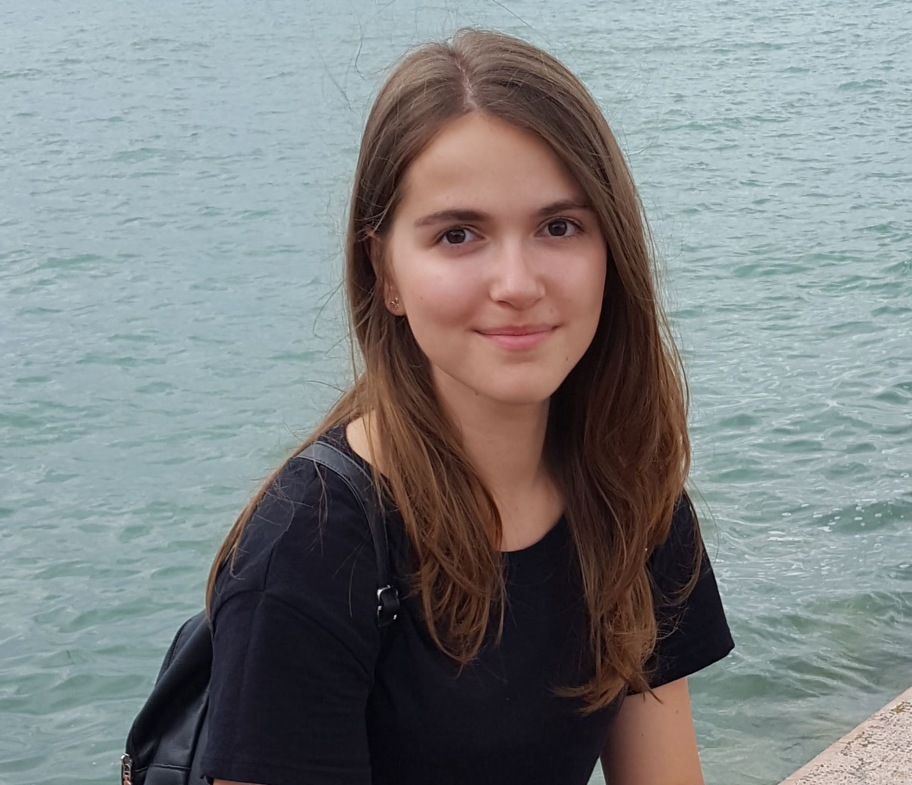

Yuliia Kotsur
Personal statement
I am responsible and persistent student who is studying computer science at the
university. Besides, I try to get knowledge myself,taking parts in various free courses. Moreover I try to code and write some
programs. That’s why I want to learn front-end now. At the moment I am
looking for possibilities to be educated by professionals and get a lot of practice so I
could participate in creating real projects. Therefore I am ready to work hard and
improve my skills every day.
Key Skills
- Good knowledge of procedural programming C++;
- Basic knowledge of OOP and programming language Kotlin;
- Intermediate level of English;
- Good at various areas of Microsoft Office, including Word,
Excel, Access and PowerPoint.
Employment History
I haven’ t had any job experience yet.
Education
Burshtyn secondary school of I – III degrees No.3
- September 2008 – June 2019
- Graduaded a high school (10 – 11 forms). GPA 11,8
University of the State Fiscal Service
- September 2019 – now
- Student of 2 form
- Specialization: Computer Science
My social accounts
- My instagram account
- My linkedin account
- My Git
Additional links
- Resume in Ukrainian
- Shopiing list
- Links in text